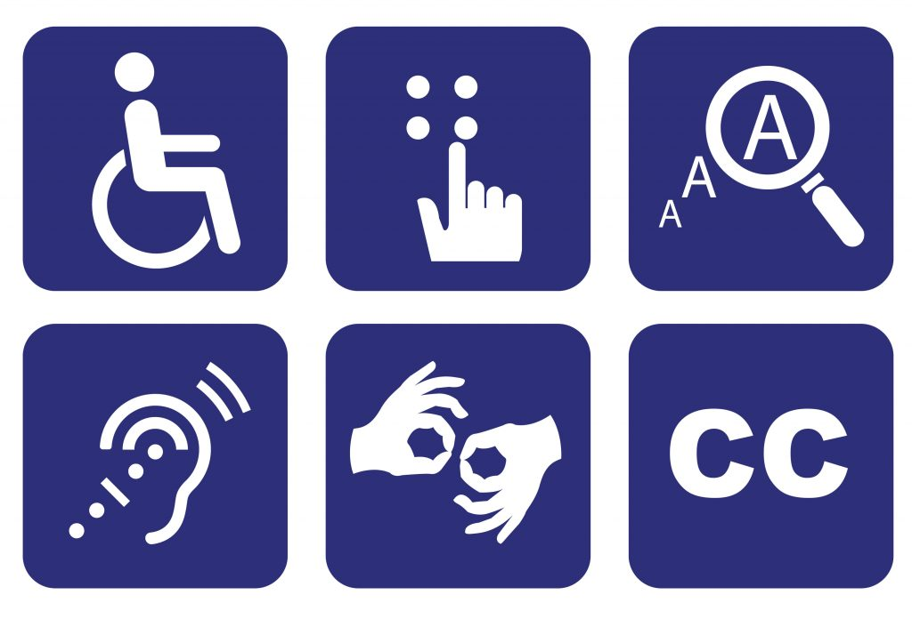

O que é a acessiblidade em si?

Promover a acessibilidade significa assegurar às pessoas com deficiência o acesso, em igualdade de oportunidades, ao meio físico, ao transporte, à informação e comunicação, inclusive aos sistemas e tecnologias da informação e comunicação, bem como a outros serviços e instalações abertos ao público ou de uso público.
Toda pessoa com deficiência ou com mobilidade reduzida, tem os seus direitos assegurados pela “Declaração Universal dos Direitos Humanos”, pela Organização das Nações Unidas, pela Organização Mundial da Saúde e demais legislações federais, estaduais e municipais. Apesar disso, ainda há diversas dificuldades para a sua garantia efetiva, o que torna o engajamento da sociedade fundamental para a eliminação de barreiras e formas de discriminação.
O que é a acessibilidade para web?
As barreiras também existem na Internet e afetam milhões de pessoas com deficiência em todo o mundo. Atualmente, estes cidadãos com dificuldades motoras, sensoriais ou cognitivas dependem mais do que nunca dos progressos em termos de acessibilidade web para não ficarem à margem do desenvolvimento educativo, econômico e social.
A acessibilidade web combina programação, design e tecnologia para construir uma Internet sem barreiras que permita que todos os usuários tenham o entendimento, a aprendizagem, a navegação e uma interação plena com a web.
Da mesma forma que a indústria e a arquitetura, por exemplo, concebem objetos, veículos e espaços adaptados às necessidades das pessoas com mobilidade reduzida ou problemas cognitivos, visuais e auditivos, a Internet também deve percorrer esse caminho.